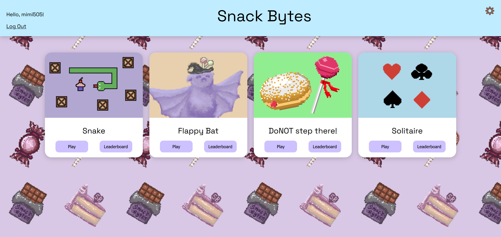

Hello, I'm Marian.
Master's in Computer Science
Learn More About MeAbout Me
I am a computer science major, currently completing my masters. A lot of the recent research I have done has pertained to computer vision, where I worked topics such as fashion image classification and breast cancer reccurance prediction. I also have an interest in some artistic/game projects.
View My ProjectsMy Projects
- Fashion Image Classificaiton - Performed a comparative study of three CNN architectures for fashion image classification, evaluating 36 hyperparameter configurations using grid search. Presented paper the 10th International Conference on Big Data Analytics, Data Mining and Computational Intelligence.
- Breast Cancer Reccurance Prediction - Currently developing a ViT-based cancer classification pipeline using CAMELYON17 and benchmarking performance across HPC systems.
- Snack Bytes - Created a retro game collection with original art, using Firebase for user authentication and backend support.
- Simulation Showcase - Built one of three interactive 3D simulations and helped integrate them into a cohesive Three.js-based website.